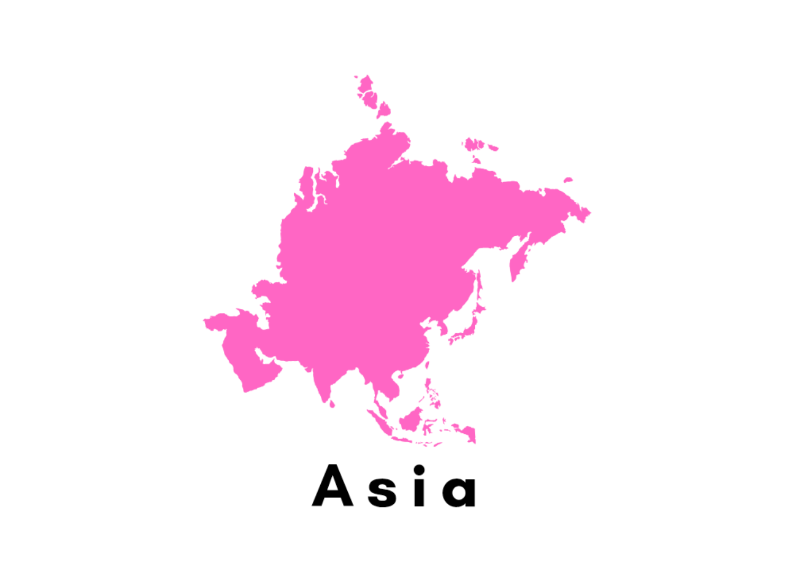
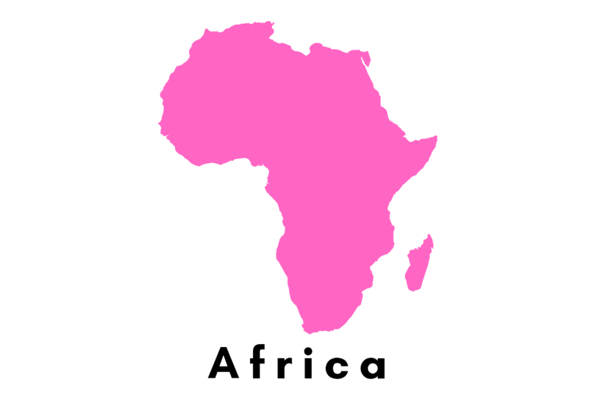
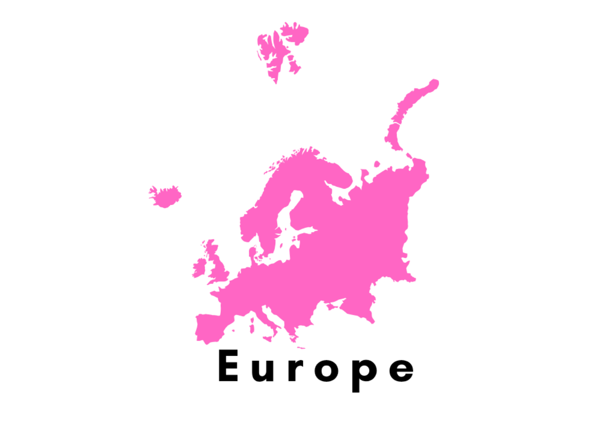
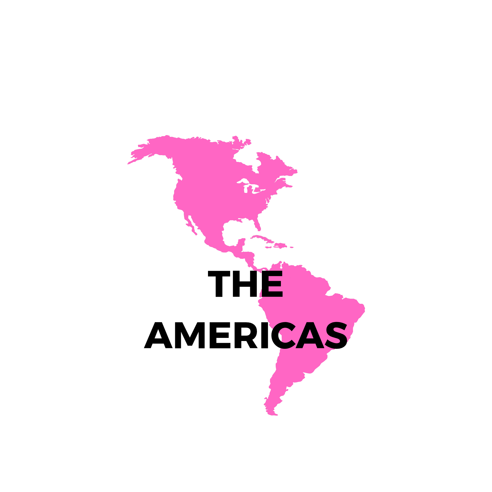
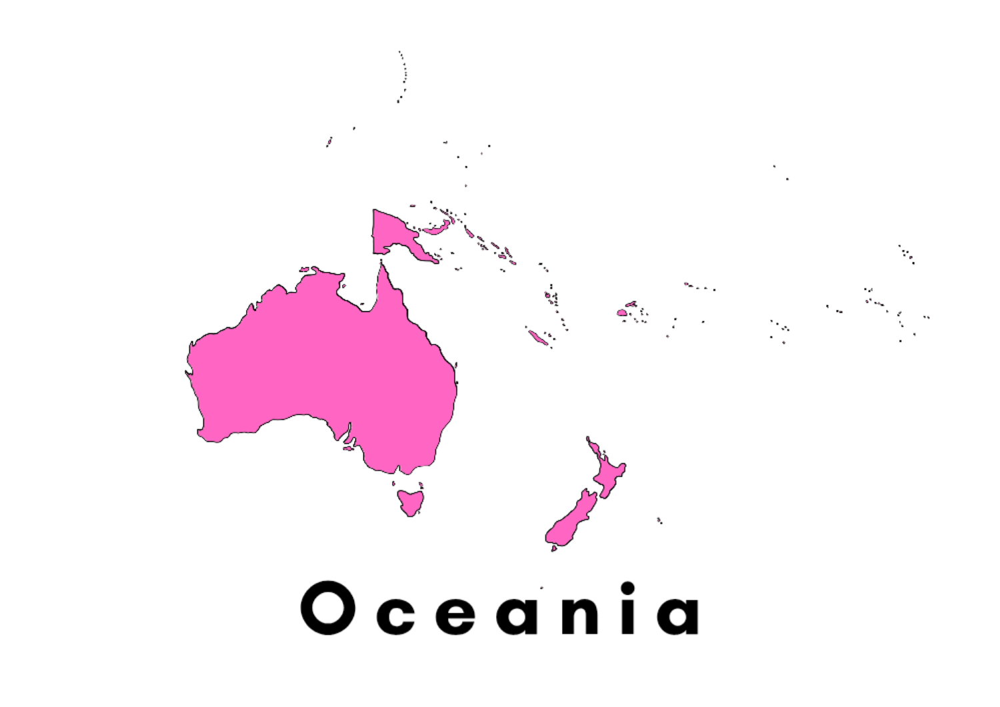

The art of self-care
Timeless
Rituals
A curated journey from the arctic ice to tropical oceans, uncovering traditions where beauty meets spirit.
Definition
A beauty ritual is more than a routine; it is a deliberate practice rooted in heritage and intention.
HERITAGE • IDENTITY • SELF-CARE • NATURE • SPIRIT • TRADITION •
HERITAGE • IDENTITY • SELF-CARE • NATURE • SPIRIT • TRADITION •
Visual Archives
Diversity is the palette of the world.
Touch to reveal the true colors of tradition.



South Korea
Japan
India
China
Thailand
Philippines
Vietnam

Namibia
Morocco
Ghana
Egypt

France
Italy
Norway
Sweden
Finland
Denmark

Brazil
Mexico
United States
Argentina
Uruguay
Colombia
Dominican Republic

New Zealand
Australia
Universal Language
Across oceans and borders, beauty rituals become a shared language of care, memory, and presence.
Global Beauty
GLOBAL BEAUTY • DISCOVER • CONNECT • RITUALS • CULTURE •
GLOBAL BEAUTY • DISCOVER • CONNECT • RITUALS • CULTURE •